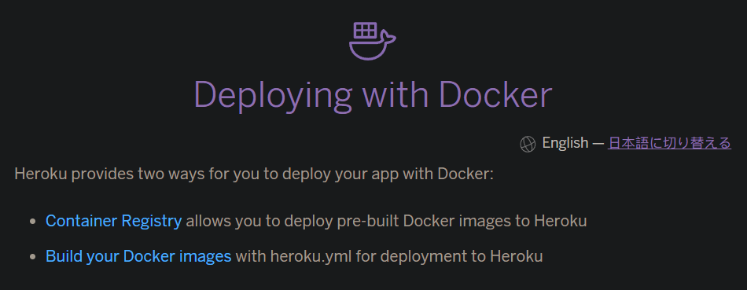
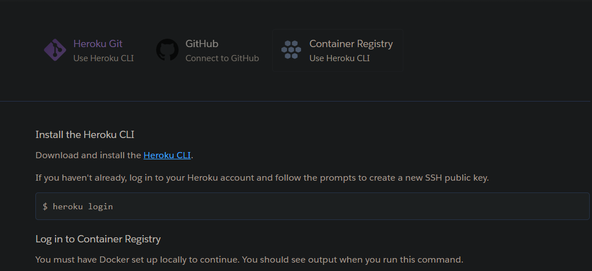

利用heroku实现自动发布博客
之前博客都是使用Github Actions实现自动构建的。最近不知道为啥老是不能构建成功，大概是因为资源被使用的太多了吧。。又想起来还有几个付费的heroku账户，于是便把构建仓库迁移到heroku平台。遂写一下这篇文章，也算是做个记录。
关键词：heroku，自动化构建
安装heroku cli并登录
安装
官网提供了snap的安装方式，不过这里使用脚本安装
1 | curl https://cli-assets.heroku.com/install.sh | sh |
登录
这里使用非浏览器登录的方式，使用-i参数。
如果出现Logged in as 则表示登陆成功。
1 | heroku login -i |
使用 Docker 进行部署
heroku提供两种方式，第一种是部署预先构建的docker镜像到heroku；第二种是使用heroku.yml发布镜像到heroku平台。

为了简化步骤，这里先使用第一种方式。
部署预先构建的docker镜像到heroku
登录heroku容器仓库
1 | heroku container:login |
编写流程的Dockerfile
1 | FROM node:16-bullseye-slim |
而bash脚本里面做的主要就是拉取仓库，利用hexo生成静态文件，然后推送到指定的仓库。这样可以利用github pages等其他可以托管静态文件的服务了。
构建镜像并且推送到heroku的镜像仓库
1 | heroku container:push worker -a <APP_NAME> |
ps：worker是区别于web的进程类型，由于这里不是web服务，故使用worker。
折腾了半天，生成的镜像倒是可以推送新的静态文件到指定的仓库了，但是这个操作无法利用博客源码的更新自动执行！！！

由于我这里使用的是heroku cli进行操作的，无法连接到GitHub仓库，也就无法触发更新了。看来只能使用第二种方法，使用heroku.yml部署镜像到heroku了
使用heroku.yml部署镜像
在博客源码的根目录增加heroku.yml，heroku.yml描述的就是容器需要完成的操作。
如果是使用这种方法，那么就需要更改一下Dockerfile。因为heroku.yml和博客源码在同一目录，而拉取源码的操作就可以去掉了。